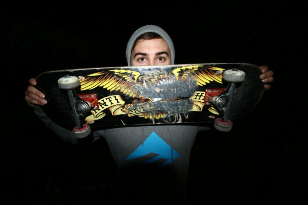
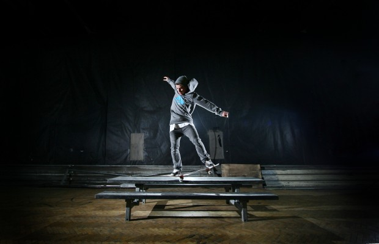
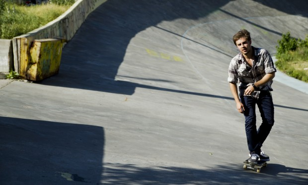
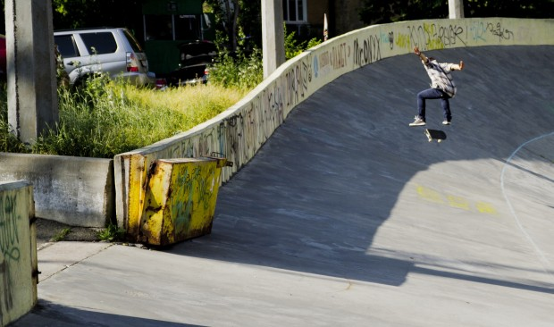

Фото – Женя Доканин
Привет! Представься, сколько тебе лет, как давно катаешься?
Антон Кулеба, мне 24 года, последние три года катаюсь плотно, а начал кататься 9 с половиной лет назад.
А как начал?
Как начал… Как я начал кататься? (минута молчания) Ааа, Сидж пришел в школу, мы учились с ним первые классы, потом он ушел, опять пришел, с доской, на которой на месте делал triple flip. Он мне дал толчок в катании.
Ты живешь за Киевом, расскажи какие там плюсы и минусы?
Вишня (Вишневое), классный город, там тихо, можно сказать с намеком на европейский город.
А минусы?
Минусы – постоянно бухают на лавках, а в центре, ты выходишь, а там чувачки на машинах спорт костюмах, вдоль дороги разговаривают, все дела.
Спарко и Момо?))
Да – да (смеется). А вообще много молодёжи, модников.
Расскажи про локальную скейтовую тусовку в Вишневом, как там скейтбординг развит?
Были там такие скейтеры как Гармон и Белка, крутые, но вот сейчас я их не вижу, но вот Женя Головин и Вова Севастополь – нормальные ребята, со своим чувством юмора и стилем. Да и вообще тусовка хорошая.
Как тебе в 24 года продолжать кататься, почему не останавливаешься, что поменялось? И как взгляд на скейтбординг изменился с момента, когда ты 9 лет назад начал кататься и до сегодняшнего дня?
Вообще все поменялось! По другому все, тогда ты ехал с гордостью на скейте, по тротуару и знал, что ты один из тех немногих, кто катается на скейте, люди все оборачивались с удивлением “Ооо, скейтборд, интересно”, гордость брала. А сейчас все иначе, массмаркетом каким-то становится…
BS Nosegrind. Фото – Женя Доканин
А что тебя подталкивает продолжать кататься?
Для меня, это как какой то ребус, я его разгадываю, потихоньку учусь трюки делать. А вообще для меня скейтбординг, это как чистить зубы, если я перестану чистить их, то начну вонять. Так и скейтбординг – это большая часть моей жизни!
А чем еще занимаешься, помимо скейтбординга?
Помимо скейтбориднга, занимаюсь растениями )
Ваааауууу!) Ты озеленяешь планету – это классно!
Да, несу радость людям )
А какие планы на лето, которое так скоро?
Помимо катания, хочу отведать заграницу. Хочу поехать к своему другу в Барселону, очень давно уже ждет и зовет.
Расскажи про видео. Какие на тебя повлияли сильно, и какие последние тебе понравились?
Первое и любимое видео – это “Катарсис”, которое для меня изменило все. Эти люди для меня стали… Как сейчас для некоторых Stay Gold (Emerica), так для меня тогда был Катарсис. Дима Рыбак, Вадим Юзба, Виталий Хорольский, все – Шева, Тарас, для меня это было мега, я такого не видел. Тогда возможности не было, не было интернета, всего этого.
А зарубежное?
Зарубежное, из старых – One step beyond (Adio) дошел до меня как то и я его очень заценил. Так же постоянно смотрел Chomp on This тот же, очень крутое.
Из последних?
Последнее, однозначно – Alien Workshop “Mind Field” , очень крутое. Ну и Stay Gold само собой, очень качественное и красивое.
Кого бы из Украины выделил бы? Кто валит, у кого крутой стиль?
Из украинских самых любимых моих скейтеров – это Никита Кузьменко “Перец”, потому что у него стиль нереально крутой, мне очень нравится. Он катается с душой, хотя последнее время редко это делает. А вообще все с кем я катаюсь – ты, Жека Кюне; я от него много чему учусь, тот же менуал я сегодня делал и иначе бы я его не доделал бы. Я вот знаю, что Женя пока не доделает со спота он не уходит, настырный, ну что я зря пришел и час колбашусь, а потом взять и уйти. Вот в этом он очень мне припер подает и в стиле тоже. Да все крутые: Доманский, Кузьмич, Тевкун, Палка, Папай, Пашуля,Клима, Вадим Юзба ,Маньяк – это киевский отдельный стиль, который нравится! Это катание с душой, это не скейтпарк – это улица!
Фото – Вова Гвоздь
Ты стильный и красивый, девочки постоянно смотрят на тебя ))) Были у тебя какие-то забавные случаи по этому поводу?
Иногда просили сфотографироваться, хотя я думаю такое у каждого бывает. А недавно мне Вова говорит: “А ты знаешь такую вот девочку?”, “Нет”, “А она тебя хочет )))”
Какую музыку посоветуешь читателям. Какую слушаешь сейчас?
Одни из моих любимых групп – это Wolfmother, The Brian Jonestown Massacre, Lynyrd Skynyrd, нравится еще Dinosaur Jr., голос очень классный, гитара. А вообще катаюсь, под спокойную, ненапряжную музыку, она меня концентрирует. Хотел бы попасть на концерт The Killers, The National и какие-то шоу – Kiss, Iron Maiden.
А украинские группы? Или они пока еще не родились?
Quinsberry shot хорошая группа,Pur:Pur. А из популярных не знаю, я телевизор не смотрю, не могу судить. Крихітка Цахес, из популярних, нормальная штука.
Ясно. Твой сетап на данный момент, на чем ты катаешься?
Доска Slave 8,12,подвески Thunder 147″, колеса Pig 53мм, хочу очень колеса Satori . Mometum колеса хотел попробывать, так и не дошло дело заказать. Ну из колеса, лучшие на каких я катался – это Satori. Подшипники раз на раз не приходятся, один раз пачка идеальная, другой вообще разлетаюся быстро.
А какие кеды нравятся, в каких сейчас катаешься?
Последнее время катаюсь в Nike SB, четвёртая пара и отлично, удобные и дольше держаться. Они дороже, но хорошо держаться и пятка не отбивается. А вообще еще Vans нравится, в Chukka Low нравилось кататься. Хотелось бы Adidas попробовать.
Fakie b/s flip 270. Фото – Вова Гвоздь
Что тебе вообще хотелось бы сказать напоследок?
Скейтбординг такая штука, вообще спасибо Богу за скейтбориднг, кто-то парится, ищет спортзалы, что бы занять себя физически или кружок домино, не то, чтобы мне заняться нечем, я просто хочу кататься постоянно! И, даже, не скользить, флипы делать; нравится с чуваками по даунхилам гонять, на большой скорости – круто! Гонять по Киеву – это кайф, когда своя компания людей, которых ты знаешь давно. Вообще это очень крутое времяпровождение.
Хочу посоветовать, не делать из скейтбориднга войну, он должен объединять, а не разделять. Неприятно читать комментарии на сайтах, кто-то плохой, кто-то хороший, зачем? Тем более это пишут, те люди, которых мы не видим, не знаю, может они хотят попасть в тусовку, выделиться, но это дичь.
Ну, а теперь приветы.
Спасибо за интервью. Привет Ярославу Дамброскому “Сиджу”, моему другу в Барселону, привет Жеке Кюне в Донецк, привет “Перцу” в Варшаву. Большой привет: Пашуле, Доманскому,Мане, Палке, Папаю, Кузьмичу, Тевкуну; Демону, Юзбе спасибо за тот скейтборидинг, который мы имеем! Привет Максиму Булале – катайся почаще, Илье Клименко в Нью Йорк. Я наверно всех сейчас не вспомню, привет всем кого я знаю,с катаю,вижусь,слышусь!
Спасибо тебе за интервью! Надеюсь, ты нас еще порадуешь фото и видео, хоть это и не главное.
Да! Roll Forever! Давай пять!
Профайл Антона Кулебы смотрите в “Клава, это твой лучший день!“
Tweet
отличное итервью, спасибо дэйли! куля – крутан!
Куля Братан!Приятно что вспомнил)Скоро увидимся!
Куля братюня, люблю)
ай люблю, ай люблю. ай туз!
ponravilos’!
душевно…